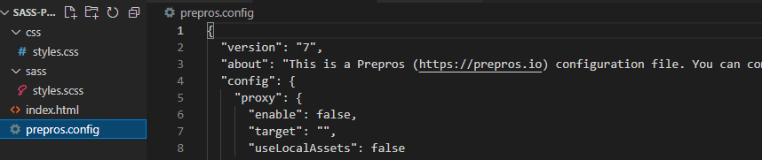
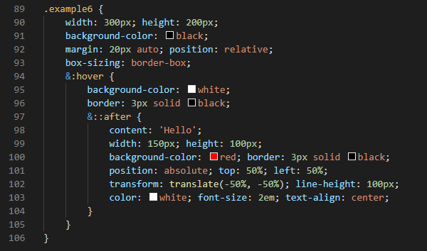

SASS is an extension to CSS that can help us write more flexible styles. It uses variables, functions, conditional statements and more. It can also split our SASS files up into modules, which is very useful when working on large projects.
When we write in SASS, browsers will not understand our code. SASS needs to first be translated into CSS, which can be achieved by a lot of different methods. Lastly, SASS is written in Ruby so you may need to install Ruby in your computer, this will depend on the way you want to use SASS.
Before you go over this page you should first get familiar with programming fundamentals such as variables, functions, if statements, etc. You can check out my JavaScript notes where I write about those stuff. Of course you will also need to know CSS.
There are two different ways to install and use SASS, you can either install Sass ont he command line, or download one of the many applications that exist. Using an application is easier for beginners, and many also include cool extra feautures that can make your life easier, so why not use of of those?
Let's download Prepros then, I know it says you need to pay, but it actually has a free version too and I have heared it's pretty cool, you can download it from this site, just press on the "Download Free Unlimited Trial" button:
After you download it you should install it and then you will be ready to use it. After it is opened it will ask you to either drag a project or browse your files you select a folder:
So, let's first create a really simple project folder, you can create it either by using the command line or if you are unfamiliar with it then you can simple create them your self with your mouse:
Now, let's put this folder in Prepros:
After clicking on the styles.scss file the list at the right appeared, as you can see there you can change some settings. The output file has automatically been assigned to be the styles.css file inside the css folder, that happened because I gave those two files the same name, if I had not I would have to select the output file my self. In file options the process automatically means it is going to compile Sass inside our styles.css file automatically every time we save the file, if you don't want this to be performed automatically just uncheck the option and use the process file button whenever you want to compile the file. The prefix CSS means it will automatically add prefixes to our CSS.
If you check the folder you can actually see that a file named prepros.config has been added, this is a JSON file that basically contains information about how prepros should work and stuff, you shouldn't really care about that:
Let's try writing some Sass now, just to test if this works or not:
As you can see, just after I saved the file a notification appeared at the right down corner of my screen, if I had made an error in the syntax then it would also appear, but it would say that the file could not be processed, and also it would tell me what the error is, which is cool since it help with debugging.
Let's what changes happened in our styles.css file now:
So, one of the many feautures Sass has is the ability to define variables. This is extremely helpful and can save you a lot of time. For example, if you wanted to have the same value applied to multiple styles, then you should probably do it using variables, this way if you ever need to change that value you won't have to change it for every single place you used it, you can simple change the variable's value and all the places you used the variable will automatically be updated:
// Variables $deepBlue: #032f3e; $sectionHeading: 24px; #main-div{ background: $deepBlue; } section h1{ font-size: $sectionHeading; color: $deepBlue; }
So, first of all, I want you to notice how I made a comment by using "//" instead of "/* */", you can use "//" to make one line comments, if you want the comment to span multiple lines then you can still use "/* */" just like in JavaScript. Anyway, about variables now, it's pretty simple, you define a variable by using the "$" symbol followed by a name, and then you use ":" symbol to assign a value to that variable. To reference a variable you need to again use the "$" symbol followed by the variable's name you want to reference.
You can also define variables with normal CSS, using the var keyword, I have explained how it works before here, it may actually be better to use normal CSS variables in certain cases, since normal CSS variables can be manipulated easily using JavaScript.
Sass also gives us the ability to nest styles. Let's firstly add some HTML so that we have something to style:
<div class="container"> <div class="item1"><p>Item1</p>&;t'/div> <div class="item2"><p>Item2</p>&;t'/div> <div class="item3"><p>Item3</p>&;t'/div> <div class="item4"><p>Item4</p>&;t'/div> </div>
Now let's write our Sass code:
As you can see, instead of writing .container .item1 {...}, .container .item2 {...}, etc, etc, I simple nest the styles inside .container. The code I wrote about was later compiled into CSS and here is how it looks when translated to normal CSS:
The result of the code above is this very basic flex box you can see bellow:
Item1
Item2
Item3
Item4
Mixins is another great feauture of Sass that is going to make your life while writing CSS a little bit more easier. You can think of Mixins as JavaScript functions, and that's because they work pretty similarily to how JavaScript functions work, you can even add parameters like in JavaScript functions, anyway, here is an example of a very simple Mixin:
HTML Code:
<div class="container2"> <div class="item1">Item1</div> <div class="item2">Item2</div> </div>
Sass Code:
@mixin example { width: 50%; height: fit-content; text-transform: uppercase; position: absolute; left: 50%; top: 50%; transform: translate(-50%, -50%); } .container2 { width: 40%; height: 300px; margin: auto; background-color: black; color: white; position: relative; .item1 { @include example; text-align: left; } .item2 { @include example; text-align: right; } }
Outcome:
So, let me explain now, first I defined the mixin by using the "@" symbol followed by the word mixin and a name, inside the mixin I defined some styling rules. Later I used this mixin in two different places using the "@" symbol followed by the word include and the name of the mixin I wanted to include.
Pretty cool, right? But this isn't all, mixins also lets us add parameters just like in JavaScript functions, here is an example:
HTML Code:
<div class="container3"> <div class="item1">Item1</div> <div class="item2">Item2</div> </div>
Sass Code:
@mixin example2($color, $bcolor){ background-color: $bcolor; color: $color; flex-grow: 1; text-align: center; line-height: 300px; text-transform: uppercase; font-size: 2em; user-select: none; } .container3 { width: 40%; height: 300px; display: flex; margin: 50px auto; background-color: grey; border: 3px solid black; flex-direction: wrap; justify-content: space-evenly; .item1 { @include example2(black, white); } .item2 { @include example2(white, black); } }
Outcome:
To define a parameter use the "$" symbol followed by a name, just like variables, inside the mixin you can reference those parameters just like how you would if they were variables. To add multiple parameters simple seperate them using the "," symbol, then you can assign values to those parameters every time you use the mixin, just like JavaScript functions.
As a project gets bigger, your Sass code may start to get too big to maintain. It's good to keep things organized, in multiple files, so that you can keep things easier to maintain, and be more productive. For this reason, you can for example have a file where you create your variables, a file where you create your mixins, a file where you define some basic reset styles, and finally a file where you add all other extra stylings you want to do where you will also import all the other files so that they can all be compiled into one CSS file at the end.
According to Sass website, those files you import into your main file are called partials, and their file names should begin with an underscore, an underscore is the "_" symbol. You might for example name a file something like _partial.scss. The underscore lets Sass know that the file is only a partial file and that it should not be generated into a CSS file. Sass partials are used with the @import rule.
Inside a partial, if you want to have any variables, mixins or functions that are considered private and aren't imported, you should define them with an underscore (_) or hypen (-).
Let's give it a try then, to see if things work as expected, and if any problems will occur by prepros, will it be able to tell the files are partials? Or will it compile them into CSS?
First let's create the files:
Now let's add some code inside them and import it into styles1.scss to see if it will work:
HTML Code:
<div class="container4"> <div class="item1">Item1</div> <div class="item2">Item2</div> <div class="item3">Item3</div> </div>
_reset.scss:
.container4 { background-color: black; border: 3px solid black; width: 40%; height: 300px; margin: 50px auto; display: flex; flex-flow: row nowrap; justify-content: space-evenly; overflow: hidden; }
_variables.scss:
$font-size: 2em; $flex-grow: 1;
_mixins.scss:
@mixin example3($color, $bcolor, $h-align, $v-align){ color: $color; background-color: $bcolor; text-align: $h-align; line-height: $v-align; flex-grow: $flex-grow; font-size: $font-size; }
styles1.scss
@import "./_reset.scss"; @import "./_variables.scss"; @import "./_mixins.scss"; .container4 { .item1 { @include example3(white, black, left, 50px); } .item2 { @include example3(black, white, center, 300px); } .item3 { @include example3(white, black, right, 550px); } }
Outcome:
As you can see everything worked well.
So, before we learned how to nest styles in Sass, but trying to nest pseudo classes won't work.
To nest pseudo classes you have to add the "&" symbol infront the pseudo class, like in the example bellow:
Sass let's use use math to calculate values, just like the calc() method in CSS does, however, in Sass you can simple add your calculations inside parenthesis without the calc keyword and it will still do the job:
HTML Code:
<div class="example7"> <div>a</div> <div>a</div> <div>a</div> <div>a</div> <div>a</div> </div>
Sass Code:
.example7 { background-color: black; width: 500px; height: 100px; font-size: 0px; box-sizing: border-box; border: 3px solid black; margin: 20px auto; >* { display: inline-block; box-sizing: border-box; border: 2px solid black; width: (100% / 5); height: 100%; background-color: white; &:nth-child(even){ background-color: grey; } } }
Outcome:
Colour functions are predefined functions that can be used to achieve a variety of different things, depending on the function you are using of course. In Sass there are a lot of colour functions you can use, you can find them in this page with explanations of what each does.
To be able to use those color functions you should first import that sass:color module, you can easily do this by using the @use keyword, remember however, you have to do this at the start of the Sass document, or else it won't work, modules should be imported at the top, to import the color module simple write @use "sass:color"; like this:
HTML Code:
<div class="color-example"></div>
Sass Code:
@use "sass:color"; .color-example { width: 10vw; height: 10vw; background-color: green; border: 3px solid black; box-sizing: border-box; margin: 20px auto; &:hover { background-color: color.adjust(green, $lightness: 10); } }
Outcome:
This function allowed us to easily make green lighter.
Let's try another function, the color.complement($color) which will return the complement color of the color passed inside it.
HTML Code:
<div class="color-example2"></div>
Sass Code:
@use "sass:color"; .color-example2 { width: 10vw; height: 10vw; background-color: brown; border: 3px solid black; box-sizing: border-box; margin: 20px auto; &:hover { background-color: color.complement(brown); } }
Outcome:
The @content keyword is used together with mixins, basically, it can be used to dynamically add extra content to a mixin when referencing that mixin. For example, you can have a mixin that adds certain styles, but also give it the ability to include extra styling if needed when referenced. I think the best way to explain the @content keyword is to just show you an example, so here is one:
HTML Code:
<div class="example8">Fly me to the moon</div>
Sass Code:
@mixin createDiv($bc, $w, $h, $margin) { background-color: $bc; width: $w; height: $h; margin: $margin; @content; } .example8 { $size: 25vw; @include createDiv(black, $size, $size, auto){ border: 2px solid white; border-radius: $size; text-align: center; line-height: $size; color: white; text-transform: uppercase; font-size: 2vw; white-space: nowrap; } }
Outcome"
Lists in Sass contain a sequence of values, like arrays in JavaScript. Elements in lists can be seperated by commas (Helvetica, Arial, sans-serif), spaces (10px 15px 0px), or slashes as long as it's consistent within the list. Unlike most other languages, lists in Sass do not require special brackets, however, you are allowed to write lists with square brackets ([line1, line2]).
The spread operator in Sass works similarily to the spread operator in JavaScript, basically, in a mixin, instead of predefining all the parameters one by one you can instead define a list of any extra parameters that can possible be added.
To access items in a list you can use the nth(list, item) keyword, like in the example bellow:
HTML Code:
<div class="example9"></div>
Sass Code:
@mixin something($cl, $size...){ background-color: nth($cl, 1); border: 3px solid black; border-color: nth($cl, 2); width: nth($size, 1); height: nth($size, -1); @content; } .example9 { @include something((black, white), 200px, 100px){ margin: auto; }; }
Outcome:
I want you to notice how writing nth(list, -1) picks the last item in the list, if I wrote nth(list, -2) then the second item from the end would be picked, and so on.
The list.append($list, $val) function can add an item to a list, the list.index($list, $value) can return the index of a value, and the length($arg) function returns the length of the array.
The @if rule is written @if <expression> { ... }, and it controls whether or not it's block gets evaluated. The expression usually returns either true or false, if the expression returns true, the block is evaluated, and if the expression returns false it is not.
For example, we could create a shorthand for adding media queries so that we don't have to write the whole thing every time we wanna add a new media query:
@mixin mQ($arg...) { @if length($arg) == 1 { @media screen and (max-width: nth($arg, 1)){ @content; } } @if length($arg) == 2 { @media screen and (max-width: nth($arg, 1)) and (min-width: nth($arg, 2)){ @content; } } } @include mQ(400px){ /* the styles added here will be applied on screens with a width smaller than 400px */ } @include mQ(700px, 400px){ /* the styles added here will be applied on screens with a width between 700 and 400 pixels */ }
An @if rule can optionally be followed by an @else rule, written @else { ... }. This rule's block is evaluated if the @if expression returns false:
@mixin mQ($arg...) { @if length($arg) == 1 { @media screen and (max-width: nth($arg, 1)){ @content; } } @else { @media screen and (max-width: nth($arg, 1)) and (min-width: nth($arg, 2)){ @content; } } } @include mQ(400px){ /* the styles added here will be applied on screens with a width smaller than 400px */ } @include mQ(700px, 400px){ /* the styles added here will be applied on screens with a width between 700 and 400 pixels */ }
You can also choose whether to evaluate an else rule's block by writing it @else if <expression> { ... }. If you do, the block is evaluated only if the preceding @if expression returns false and the @else if expression returns true.
In fact, you can chain as many @else ifs as you want after an @if. The first block in the chain whose expression returns true will be evaluated, and no others. If there's a plain @else at the end of the chain, it's block will be evaluated if every other block fails.
With the if statements you may also need to know a little bit about boolean operators, known in JavaScript as logical operators, if you have learned JavaScript you may know them as (||, &&, !), but in Sass they are easier to remember, since in Sass they are words rather than symbols.
Maps in Sass hold pairs of keys and values, and make it easy to loop uo a value by it's corresponding key. They are written (<expression>: <expression>, <expression>: <expression>). The expression before the : is the key and the expression after is the value associated with that key. The keys must be unique, but the values may be duplicated. Unlike lists, map must be written with parentheses around them at all times.
Maps are all about associating keys and values, so naturally there's a way to get the value associated with a key, the map.get($map, $key) function. This function returns the value in the map associated with the given key. It returns null if the map doesn't contain the key:
@use "sass:map"; $font-sizes: ("regular": 2em, "big": 3em, "huge": 4em); .text { font-size: map.get($font-sizes, "big"); }
This is a text lol
As you can see I first used the @use rule to import map module because without it Sass wuldn't be able to find the map functions.
To add a value you can use the map.set($map, $key, $value) function.
Interpolation can be used almost anywhere in Sass stylesheet to embed the result of a SassScript expression into a chunk of CSS. Just wrap an expression in #{} in any of the following places: selectors in style rules, property names in declarations, custom property values, css at-rules, @extends, plain CSS @imports, quoted or unquoted strings, special functions, plain css function names, loud comments.
Here is an example:
$name: 'color'; .example10 { width: 20px; height: 20px; margin: auto; background-#{$name}: black; }
Sass provides rule like @for, @each and while for implementing loops in a stylesheet. If you want to define repetitive style rules, something that could be needd for HTML lists, tables, etc then Sass loops can come handy.
SAAS @for rule works the same way that for loop works in JavaScript. It is used to iterate and compile a style block with a different value each time.
The following is the syntax for using @for rule in Sass:
@for <variable> from <expression> to <expression> { ... }
/* or */
@for <variable> from <expression> through <expression> { ... }
Alright, let's have an example now, below we have a simple HTML code with some paragraph tags:
<p class="paragraph-1">Sassy way</p> <p class="paragraph-2">Sassy way</p> <p class="paragraph-3">Sassy way</p> <p class="paragraph-4">Sassy way</p> <p class="paragraph-5">Sassy way</p>
Now, if there is a need to write some styling for the almost same style classes used in the paragraph tags, then a total of 5 blocks of styles should be written.
In this case, if the for loop is used the this task requires way fewer efforts. Also, in the style rules we need to increase the font size of each paragraph by multiplying 1px with the paragraph number.
Check the follow Sass code that can be used:
@for $i from 1 to 6{ .paragraph-#{$i} { font-size: 10px * $i; } }
The above example uses start to end method, so the variable $i goes from 1 to 5. If the same @for rule had been written in the form of start through end, then the variable $i would take values from 1 to 6.
Here is the outcome of the code above:
Sassy way
Sassy way
Sassy way
Sassy way
Sassy way
The Sass @each rule works similarly to the @for rule with the only difference being that it is used to iterate over the values of a list or map.
Following is the syntax for using @each rule:
@each <variable> in <expression { ... }
The expression returns a list and the style block evaluated for each element of the list, which is one by one assigned to given variable name, here is an example:
@each $color in (blue, black, yellow) { .#($color)-background { background-color: $color; } }
The map way is a bit different than the list, it is as follows:
$colors: (color1: blue, color2: black, color3: yellow); @each $key, $value in $colors { .#{$value}-background { background-color: $value; } }
Lastly, the @while rule is similar to the while loop in any other programming/scripting languate. It executes until the specified expression evaluates to true.
Following is the syntaxt for @while rule:
@while <expression> { ... }
The style block defined with the @while rule is evaluated until the expression evaluates to true. We should be careful while using the @while rule for looping as this can very easily lead to infinite loops.
$x: 1; @while $x < 6 { .paragraph-#{x} { font-size: 10px * $x; } $x: $x + 1; }
Functions allow you to define complex operations on SassScript values that you can re-use throughout your styleshseet. They make it easy to abstract out common formulas and behaviors in a readable way.
Functions are defined using the @function rule, which is written @function <name> (<arguments...>) { ... }. A function's name can be any Sass identifier. It can only contain universal statements, as well as the @return rule which indicates the value to use as the result of the function call. Functions are called using the normal CSS function syntax.